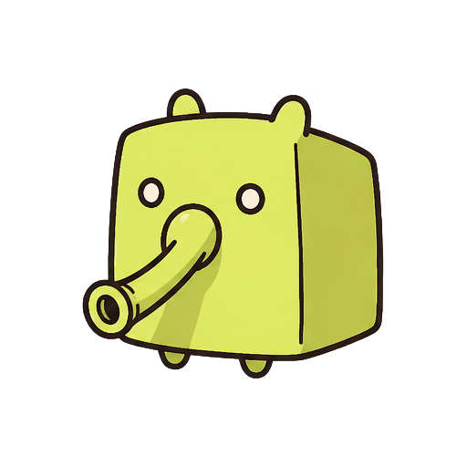

CAASOL嫌な出来事をネタに変える掲示板
下に引っぱって更新
今日の事件
汚い言葉でもOK。AIが笑える書き込みに変えます。
LIVE
変換結果
本音を書くと、ここに掲示板用の変換テキストが出ます。
タイムライン
掲示板
話題ごとに小部屋を作って、そこへ書き込めます。
汚い言葉でもOK。AIが笑える書き込みに変えます。
本音を書くと、ここに掲示板用の変換テキストが出ます。
話題ごとに小部屋を作って、そこへ書き込めます。
話したいテーマを作ると、掲示板タブにカードとして表示されます。
見た目や使い方に関する項目を、スマホ向けの形でまとめています。
投稿名は匿名のまま、見た目だけ自分らしく選べます。

リアルタイム更新の受け取り方を、この端末向けに整えられます。
読むときの見え方や、掲示板の入力しやすさをここで調整できます。
匿名で吐き出せる場を守るために、通報された内容は運営側で確認して整えます。
この端末だけに残る情報を、自分で細かく選べるようにしています。
気になった話題をあとで見返せるように、この端末の目印一覧を置いています。
表示の調子を整えたり、今の状態を読み直したりできます。
この端末で管理モードが有効です。投稿の非表示や掲示板の調整に使えます。